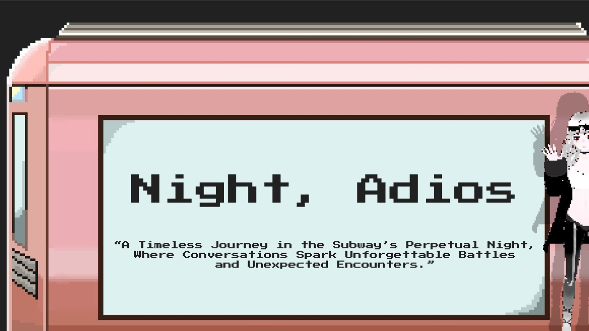

Game designer · Researcher · Artist
Caiyi
Shen.
Designing play.
Studying people.
I work at the intersection of psychology, game design, and interactive systems, exploring how people play, learn, and connect. Currently pursuing an M.S. in Game Science and Design at Northeastern University.
01 / Selected work
A few worlds
I've been building.
A selection of games, design experiments, and human-centered research. Explore each case study for the process behind the work.
-

Gameplay · Systems
Night, Adios
Combat, resource systems, and iteration in a pixel-art action game.
-

Gameplay · Playtesting
Lunch Hours
Turning dialogue into an obstacle in a paper-cut school world.
-

HCI · Research
BeforeHello
Exploring accessible ways to prepare for first meetings.
-

Systems · Prototyping
Elixir Nomad
A material-combination system connecting digital and physical input.
-

Tabletop · Learning
Echoes of Chinese Characters
A tactile learning game built around pictograms and Chinese characters.
-

Concept Art · Level Design
Deeplight Games
Character, environment and map concepts for a 3D action roguelike.
02 / The index
Follow your
curiosity.
One portfolio, different ways in.
03 / Contact